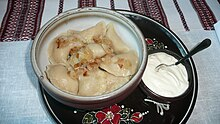
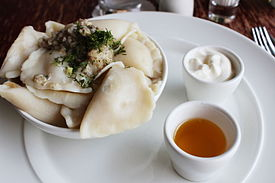
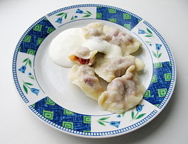
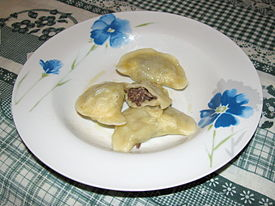

Варе́ники (від дієслова варити; у діалектах також пироги́) — українська національна страва у вигляді відвареного прісного тіста з начинкою. Начинка може бути різною: картопля, сир (картопля з сиром), квашена капуста (картопля з квашеною капустою), ягоди (найчастіше вишні), гриби, м'ясо, овочі, фрукти тощо.
Вареники — один із символів української національної кухні

Що ж таке вареники?
Невеликі трикутні чи заокруглені у формі півмісяця вироби з бездріжджового тіста здебільшого з пшеничного борошна, а також рідше з житнього, гречаного або ячмінного. В тонке тісто загортають найрізноманітніші начинки: варену товчену картоплю, тушковану свіжу чи квашену капусту, відварені гриби, вурду, відварену квасолю, солодкий чи солоний сир, бринзу, пшоняну чи гречану кашу, шпинат, цибулю, мак (насіння), ревінь, яблука, сливи, вишні, черешні, чорниці, суниці, полуниці, малину, чорнослив, рибу чи м'ясо, шкварки, лівер (печінку, легені, серце) тощо, а також з комбінаціями: печінки й сала, картоплі й грибів, картоплі та сиру, капусти і грибів, квасолі та грибів; у Карпатах — бринзи, змішаної з картоплею, а на Поліссі — з товченою квасолею.
Суто українські начинки для вареників: картопля, сир, вишні. Також використовують капусту, цибулю, гречану кашу, мак, варені дроблені сухофрукти, а на Полтавщині — навіть варений горох, розтертий з калиною.
Готову страву подають зі сметаною або розтопленим маслом, а також з підсмаженою на смальці зі шкварками чи олії цибулею. Вареники з вишнями, маком, яблуками, сливами, ягодами посипають цукром або поливають медом, інколи ягідним сиропом. Сметану інколи подають окремо. Їдять вареники гарячими.
Вареники — чи не найпопулярніша в усіх діаспорних спільнотах українська страва
На Святвечір готують особливі пісні вареники, які у деяких місцевостях західної України називають «креплики» або «краплики»
В українській культурі
Цю страву з борошна та начинки вважають, нарівні з борщем, найтиповішою в українській національній кухні. Вареники часто згадуються в українському фольклорі.
Вареники традиційно ототожнюють з Місяцем, бо вони подібні на нього за формою і використовувалися нашими пращурами як жертовна їжа, присвячена богині води. Вареники з сиром приносили в жертву біля криниць із джерельною водою.
«Аби Місяць сприяв добробуту людини, йому приносили жертву у вигляді вареників, або, як їх ще називають, варених пирогів, котрі за формою нагадують Місяць. Начинка вареників символізувала продовження роду. Вареники з пшоняною кашею сприймалися як символ майбутнього життя. Вареники з маком уособлювали множинність зоряного світу. Великою життєтворчою силою наділялися посічені в начинці яйця. Начинка з грибів сприяла чоловічій сназі, з риби — жіночій.», — писав відомий український етнограф В. М. Войтович.
Українці вважали, що вареники мають магічне значення. Їх обов'язково готували в день, коли в господарстві селянина телилася корова або ягнилася вівця. Це мало забезпечити тварині міцне здоров'я та плодючість. Дівчата ворожили на варениках на Андрія, вареники як обов'язкову страву жінки несли породіллі після пологів.
Вважалося також, що процес замішування тіста був символом процесу творення всесвіту, його структури, де саме жінка цей всесвіт творила як мати та прародителька, символ продовження людського роду.
Символом молодого Місяця та продовження роду є вареник на різдвяному столі.
Під час жнив прадавні українці їли вареники як ритуальну страву. Вареник невипадково за формою нагадує місяць у пору його четвертої чверті — коли визначалася доля врожаю. Така їжа мала надати женцям «місячної» наснаги. Під час перепочинку виконували жниварські пісні.
Ігор Чеховський записав буковинські «ворожіння» під час етнографічних експедицій наприкінці 1990-х років. Отак розповіла дослідникам 80-річна Катерина Горюк, мешканка села Мілієве Вижницького району:
«На Андрея дівчата варили пироги (так у регіоні називають вареники) і викладали їх перед голодним котом, — чий пиріг кіт хапав першим, тій дівчині належало до весілля готуватися. Якщо кіт лише відкусив пирога і покинув, значить — на розлучення і самотність».

Найбільший в світі вареник
Вигляд
Вареник має вигляд маленького півмісяця (рідше трикутника) з тонкого пласта тіста, в який загортають найрізноманітнішу начинку. З пласта розкачаного тіста вирізають склянкою круги (варени́чки, або варени́ці) чи розкачують тонко невеликі кульки з тіста (або розтягують їх руками). Інколи розкачане тісто ріжуть на квадратики. Начинку кладуть у центр кожного кружка (чи квадратика) тіста так, щоб вареник не переповнювався і тісто не дуже натягувалось, і зліплюють краї. У першому випадку отримують півкруглі вареники, в другому — трикутні (складаючи протилежні кути квадрата).
Обрізки тіста (без начинки) використовують для повторного його розкачування, а якщо начинки для вареників не вистачає, з них готують галушки або варени́ці (розкачані з тіста кружальця чи квадратики варять разом з варениками, можуть подавати разом з ними або окремо, змащуючи олією та часником).

Вареники з картоплею

З вишнями та сметаною і цукром
З лівером
Рецепти
Вареники готують з прісного тіста без дріжджів двома способами: тепловим і холодним
Використовуючи тепловий спосіб приготування тіста, частину належного за рецептом борошна заварюють окропом (1/3 загальної кількості необхідної води): це поліпшує набухання клейковини. Заварене борошно старанно перемішують, додають решту води кімнатної температури, яйця, сіль і замішують тісто так, щоб воно було однорідним, еластичним за консистенцією та відставало від рук (однак не було занадто твердим). Після цього тісту дають постояти протягом 40 хв для визрівання.
Якщо необхідно зберігати тісто для вареників триваліший час, борошно заливають холодною водою (молоком), щоб краще зберігалась волога й тісто не висихало.
Інформація була взята з сайту вікіпедія.